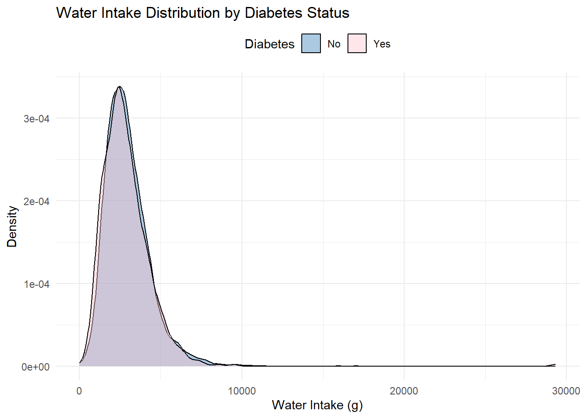
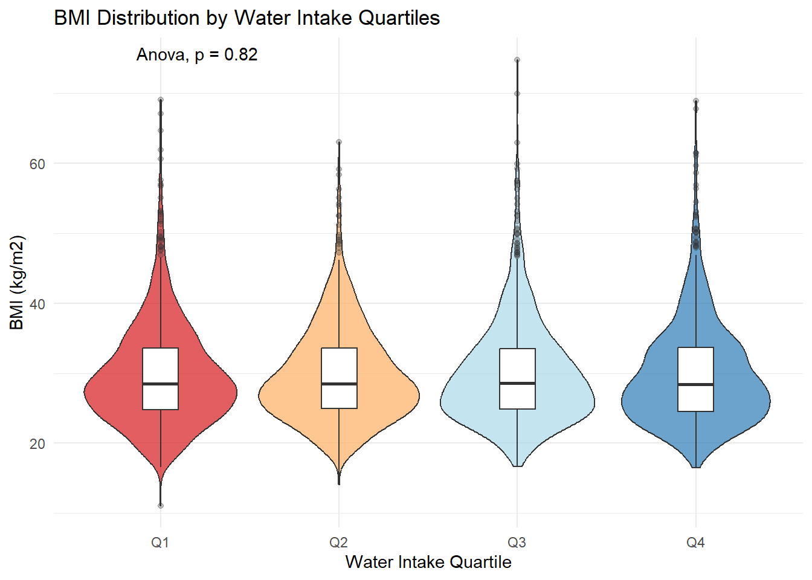
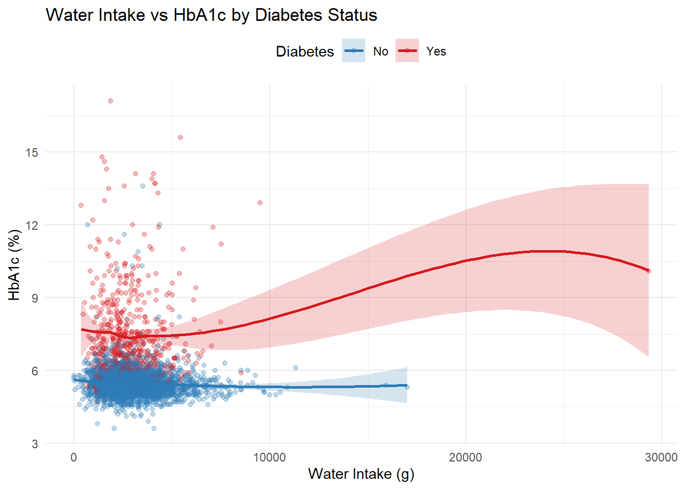
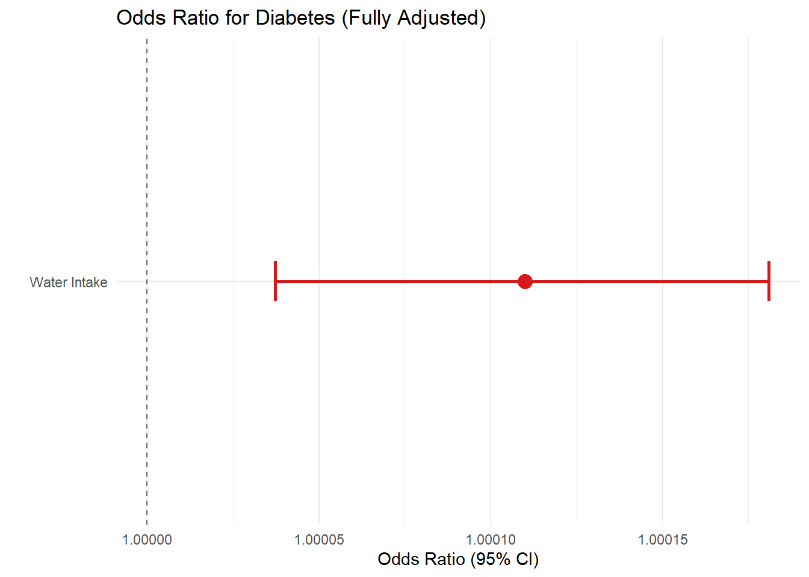
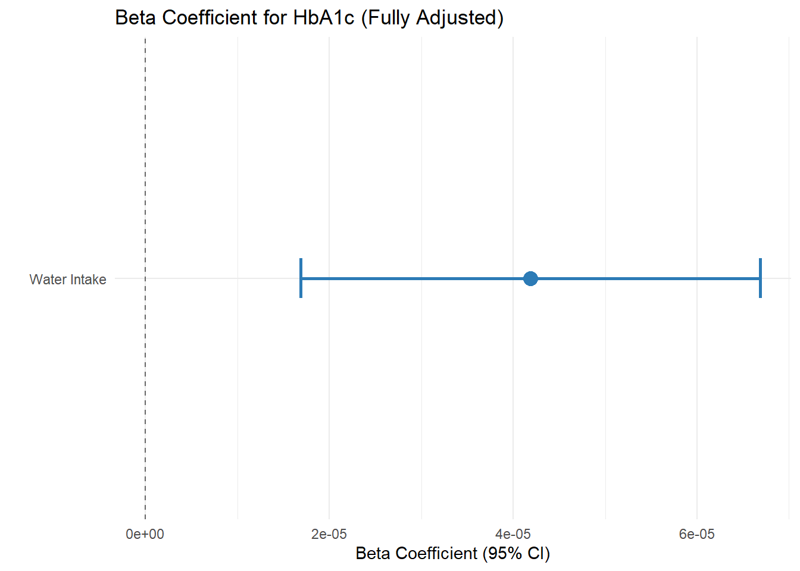
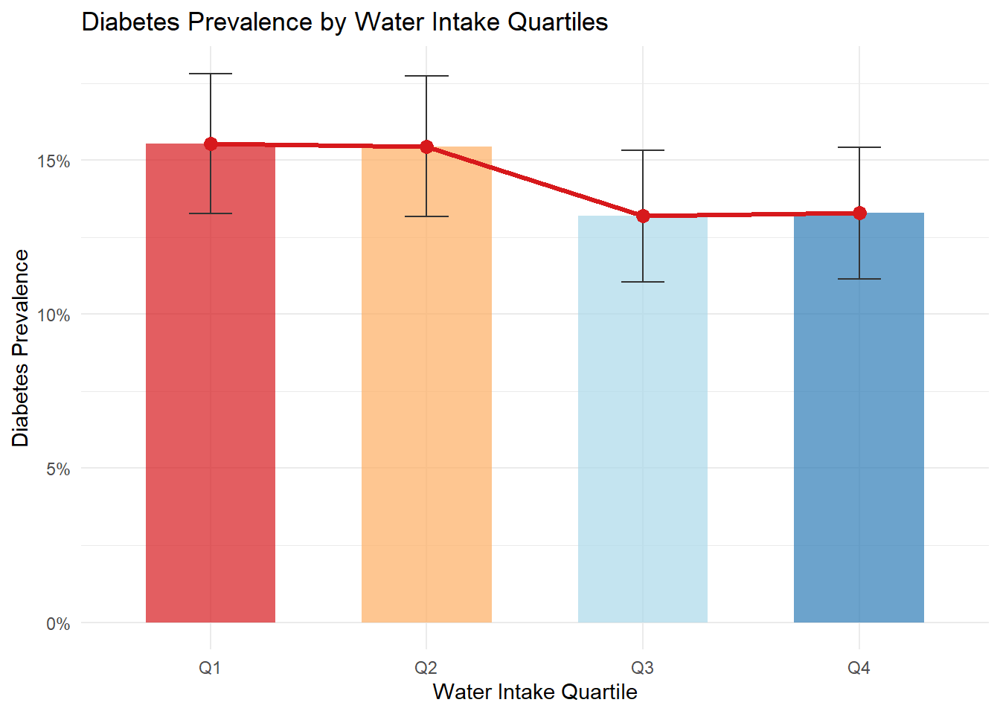
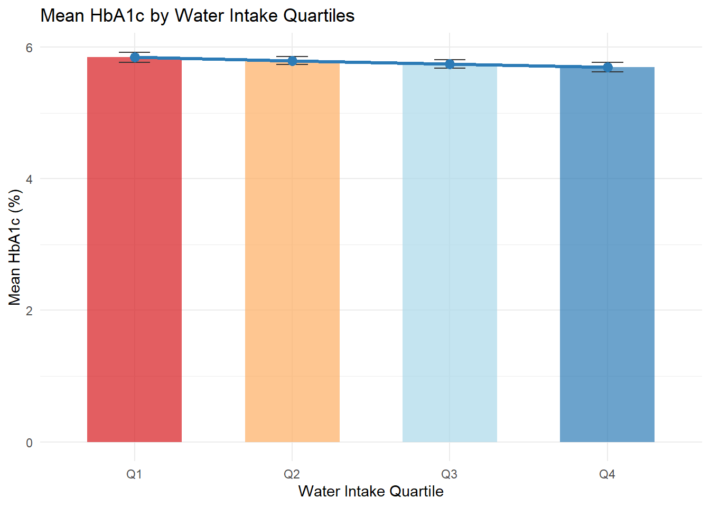
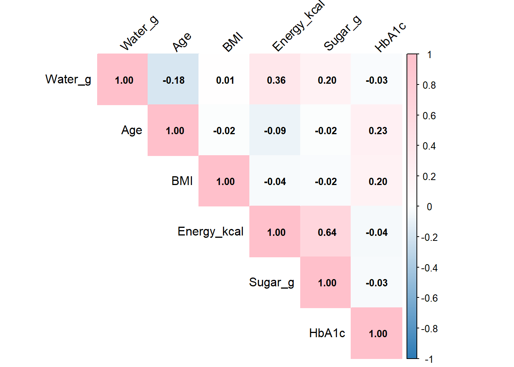
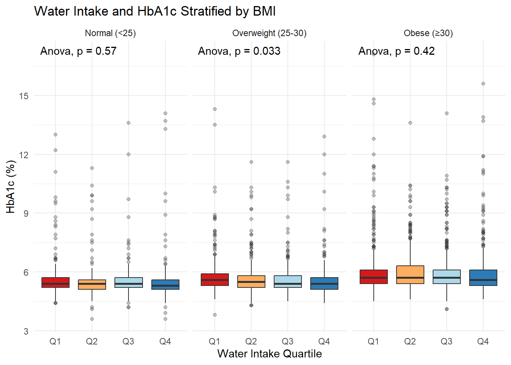

library(tidyverse)
library(readxl)
library(tableone)
library(knitr)
library(kableExtra)
library(patchwork)
library(ggpubr)
library(corrplot)
library(gtsummary)
#Read data
data <- read_excel("final_data.xlsx")df <- data %>%
#Filter out Race categories with 0 observations
filter(!Race %in% c(6, 7)) %>%
mutate(
#Continuous variables as numeric
Age = as.numeric(Age),
BMI = as.numeric(BMI),
Income_PIR = as.numeric(Income_PIR),
Energy_kcal = as.numeric(Energy_kcal),
Sugar_g = as.numeric(Sugar_g),
Water_g = as.numeric(Water_g),
HbA1c = as.numeric(HbA1c),
#Categorical variables as factors
Gender = factor(Gender, levels = c(0, 1),
labels = c("Female", "Male")),
#Only keep Race categories with data (1,2,3,4)
Race = factor(Race, levels = c(1, 2, 3, 4),
labels = c("Mexican American", "Other Hispanic",
"Non-Hispanic White", "Non-Hispanic Black")),
Education = factor(Education, levels = c(1, 2, 3, 4, 5),
labels = c("< 9th grade", "9-11th grade",
"High school/GED", "Some college",
"College grad+")),
Smoking = factor(Smoking, levels = c(0, 1),
labels = c("No", "Yes")),
Diabetes = factor(Diabetes, levels = c(0, 1),
labels = c("No", "Yes")),
#Create water quartiles
Water_Q = cut(Water_g,
breaks = quantile(Water_g, probs = seq(0, 1, 0.25)),
labels = c("Q1", "Q2", "Q3", "Q4"),
include.lowest = TRUE)
)#Create table
tab1 <- CreateTableOne(
vars = c("Age", "Gender", "Race", "Education", "BMI", "Income_PIR",
"Smoking", "Energy_kcal", "Sugar_g", "Water_g", "HbA1c"),
strata = "Diabetes",
data = df,
factorVars = c("Gender", "Race", "Education", "Smoking"),
test = FALSE
)
#Get table output (median/IQR for continuous)
tab1_print <- print(tab1,
nonnormal = c("Age", "BMI", "Income_PIR", "Energy_kcal",
"Sugar_g", "Water_g", "HbA1c"),
showAllLevels = TRUE,
printToggle = FALSE)
#Calculate p-values
#Continuous: Wilcoxon test
#Categorical: Chi-square test
p_vals <- c(
wilcox.test(Age ~ Diabetes, data = df)$p.value,
wilcox.test(BMI ~ Diabetes, data = df)$p.value,
wilcox.test(Income_PIR ~ Diabetes, data = df)$p.value,
wilcox.test(Energy_kcal ~ Diabetes, data = df)$p.value,
wilcox.test(Sugar_g ~ Diabetes, data = df)$p.value,
wilcox.test(Water_g ~ Diabetes, data = df)$p.value,
wilcox.test(HbA1c ~ Diabetes, data = df)$p.value,
chisq.test(table(df$Gender, df$Diabetes))$p.value,
chisq.test(table(df$Race, df$Diabetes))$p.value,
chisq.test(table(df$Education, df$Diabetes))$p.value,
chisq.test(table(df$Smoking, df$Diabetes))$p.value
)
#Format p-values
format_p <- function(p) {
if(is.na(p)) return("NA")
if(p < 0.001) return("<0.001")
return(sprintf("%.3f", p))
}
p_fmt <- sapply(p_vals, format_p)
#Add to table
tab1_df <- as.data.frame(tab1_print)
tab1_df$P <- ""
var_names <- c("Age", "BMI", "Income_PIR", "Energy_kcal", "Sugar_g",
"Water_g", "HbA1c", "Gender", "Race", "Education", "Smoking")
for(i in 1:length(var_names)) {
rows <- grep(var_names[i], rownames(tab1_df))
if(length(rows) > 0) tab1_df$P[rows[1]] <- p_fmt[i]
}
#show
kable(tab1_df, caption = "Table 1: Baseline Characteristics by Diabetes Status") %>%
kable_styling(bootstrap_options = c("striped", "hover")) %>%
footnote(general = c("Continuous variables: Median (IQR), Wilcoxon rank-sum test",
"Categorical variables: n (%), Chi-square test"))| level | No | Yes | P | |
|---|---|---|---|---|
| n | 3327 | 558 | ||
| Age..median..IQR.. | 57.00 [39.00, 67.00] | 64.00 [57.00, 71.00] | <0.001 | |
| Gender…. | Female | 1894 (56.9) | 282 (50.5) | 0.006 |
| X | Male | 1433 (43.1) | 276 (49.5) | |
| Race…. | Mexican American | 193 ( 6.5) | 46 ( 9.2) | <0.001 |
| X.1 | Other Hispanic | 300 (10.1) | 64 (12.9) | |
| X.2 | Non-Hispanic White | 2159 (72.5) | 304 (61.0) | |
| X.3 | Non-Hispanic Black | 327 (11.0) | 84 (16.9) | |
| Education…. | < 9th grade | 90 ( 2.7) | 39 ( 7.0) | <0.001 |
| X.4 | 9-11th grade | 178 ( 5.4) | 77 (13.8) | |
| X.5 | High school/GED | 617 (18.5) | 138 (24.7) | |
| X.6 | Some college | 1006 (30.2) | 183 (32.8) | |
| X.7 | College grad+ | 1436 (43.2) | 121 (21.7) | |
| BMI..median..IQR.. | 28.00 [24.40, 32.70] | 32.60 [27.90, 37.35] | <0.001 | |
| Income_PIR..median..IQR.. | 3.22 [1.65, 5.00] | 2.21 [1.26, 4.01] | <0.001 | |
| Smoking…. | No | 2012 (60.5) | 268 (48.0) | <0.001 |
| X.8 | Yes | 1315 (39.5) | 290 (52.0) | |
| Energy_kcal..median..IQR.. | 1867.00 [1399.00, 2458.00] | 1773.00 [1247.25, 2357.75] | 0.002 | |
| Sugar_g..median..IQR.. | 82.46 [50.90, 125.46] | 74.00 [45.72, 108.14] | <0.001 | |
| Water_g..median..IQR.. | 2756.62 [2002.84, 3665.29] | 2631.43 [1900.07, 3559.98] | 0.050 | |
| HbA1c..median..IQR.. | 5.40 [5.20, 5.70] | 7.00 [6.30, 8.10] | <0.001 | |
| Note: | ||||
| Continuous variables: Median (IQR), Wilcoxon rank-sum test | ||||
| Categorical variables: n (%), Chi-square test |
write.csv(tab1_df, "Table1.csv")#Create table
tab2 <- CreateTableOne(
vars = c("Age", "Gender", "Race", "Education", "BMI", "Income_PIR",
"Smoking", "Energy_kcal", "Sugar_g", "HbA1c", "Diabetes"),
strata = "Water_Q",
data = df,
factorVars = c("Gender", "Race", "Education", "Smoking", "Diabetes"),
test = FALSE
)
#table output
tab2_print <- print(tab2,
nonnormal = c("Age", "BMI", "Income_PIR", "Energy_kcal",
"Sugar_g", "HbA1c"),
showAllLevels = TRUE,
printToggle = FALSE)
#Calculate p-values
#Continuous: Kruskal-Wallis test (>2 groups)
#Categorical: Chi-square test
p_vals2 <- c(
kruskal.test(Age ~ Water_Q, data = df)$p.value,
kruskal.test(BMI ~ Water_Q, data = df)$p.value,
kruskal.test(Income_PIR ~ Water_Q, data = df)$p.value,
kruskal.test(Energy_kcal ~ Water_Q, data = df)$p.value,
kruskal.test(Sugar_g ~ Water_Q, data = df)$p.value,
kruskal.test(HbA1c ~ Water_Q, data = df)$p.value,
chisq.test(table(df$Gender, df$Water_Q))$p.value,
chisq.test(table(df$Race, df$Water_Q))$p.value,
chisq.test(table(df$Education, df$Water_Q))$p.value,
chisq.test(table(df$Smoking, df$Water_Q))$p.value,
chisq.test(table(df$Diabetes, df$Water_Q))$p.value
)
#format
p_fmt2 <- sapply(p_vals2, format_p)
#add to table
tab2_df <- as.data.frame(tab2_print)
tab2_df$P <- ""
var_names2 <- c("Age", "BMI", "Income_PIR", "Energy_kcal", "Sugar_g", "HbA1c",
"Gender", "Race", "Education", "Smoking", "Diabetes")
for(i in 1:length(var_names2)) {
rows <- grep(var_names2[i], rownames(tab2_df))
if(length(rows) > 0) tab2_df$P[rows[1]] <- p_fmt2[i]
}
#show
kable(tab2_df, caption = "Table 2: Baseline Characteristics by Water Quartiles") %>%
kable_styling(bootstrap_options = c("striped", "hover")) %>%
footnote(general = c("Continuous variables: Median (IQR), Kruskal-Wallis test",
"Categorical variables: n (%), Chi-square test"))| level | Q1 | Q2 | Q3 | Q4 | P | |
|---|---|---|---|---|---|---|
| n | 972 | 971 | 971 | 971 | ||
| Age..median..IQR.. | 62.00 [45.00, 71.00] | 61.00 [44.00, 70.00] | 58.00 [41.00, 67.00] | 51.00 [36.50, 63.00] | <0.001 | |
| Gender…. | Female | 622 (64.0) | 572 (58.9) | 542 (55.8) | 440 (45.3) | <0.001 |
| X | Male | 350 (36.0) | 399 (41.1) | 429 (44.2) | 531 (54.7) | |
| Race…. | Mexican American | 61 ( 6.9) | 47 ( 5.4) | 64 ( 7.4) | 67 ( 7.8) | <0.001 |
| X.1 | Other Hispanic | 120 (13.6) | 88 (10.1) | 78 ( 9.0) | 78 ( 9.1) | |
| X.2 | Non-Hispanic White | 553 (62.8) | 630 (72.4) | 635 (73.2) | 645 (75.2) | |
| X.3 | Non-Hispanic Black | 147 (16.7) | 105 (12.1) | 91 (10.5) | 68 ( 7.9) | |
| Education…. | < 9th grade | 59 ( 6.1) | 21 ( 2.2) | 25 ( 2.6) | 24 ( 2.5) | <0.001 |
| X.4 | 9-11th grade | 95 ( 9.8) | 60 ( 6.2) | 55 ( 5.7) | 45 ( 4.6) | |
| X.5 | High school/GED | 229 (23.6) | 196 (20.2) | 169 (17.4) | 161 (16.6) | |
| X.6 | Some college | 287 (29.5) | 303 (31.2) | 290 (29.9) | 309 (31.8) | |
| X.7 | College grad+ | 302 (31.1) | 391 (40.3) | 432 (44.5) | 432 (44.5) | |
| BMI..median..IQR.. | 28.50 [24.80, 33.60] | 28.50 [25.00, 33.60] | 28.60 [24.90, 33.50] | 28.40 [24.50, 33.65] | 0.908 | |
| Income_PIR..median..IQR.. | 2.40 [1.16, 4.41] | 3.00 [1.69, 5.00] | 3.26 [1.67, 5.00] | 3.56 [1.77, 5.00] | <0.001 | |
| Smoking…. | No | 576 (59.3) | 600 (61.8) | 564 (58.1) | 540 (55.6) | 0.048 |
| X.8 | Yes | 396 (40.7) | 371 (38.2) | 407 (41.9) | 431 (44.4) | |
| Energy_kcal..median..IQR.. | 1537.00 [1112.50, 1948.25] | 1784.00 [1362.00, 2286.00] | 1959.00 [1472.00, 2573.00] | 2260.00 [1681.00, 2998.00] | <0.001 | |
| Sugar_g..median..IQR.. | 69.72 [42.77, 105.96] | 81.77 [50.90, 120.00] | 82.29 [51.87, 127.27] | 92.63 [56.71, 145.06] | <0.001 | |
| HbA1c..median..IQR.. | 5.60 [5.30, 5.90] | 5.60 [5.30, 6.00] | 5.50 [5.30, 5.80] | 5.40 [5.20, 5.80] | <0.001 | |
| Diabetes…. | No | 821 (84.5) | 821 (84.6) | 843 (86.8) | 842 (86.7) | 0.258 |
| X.9 | Yes | 151 (15.5) | 150 (15.4) | 128 (13.2) | 129 (13.3) | |
| Note: | ||||||
| Continuous variables: Median (IQR), Kruskal-Wallis test | ||||||
| Categorical variables: n (%), Chi-square test |
write.csv(tab2_df, "Table2.csv")#3 models
m1 <- glm(Diabetes ~ Water_g, data = df, family = binomial)
m2 <- glm(Diabetes ~ Water_g + Age + Gender + Race + Education + Income_PIR,
data = df, family = binomial)
m3 <- glm(Diabetes ~ Water_g + Age + Gender + Race + Education + Income_PIR +
BMI + Smoking + Energy_kcal + Sugar_g,
data = df, family = binomial)
#Extract result
get_OR <- function(model, name) {
coef <- summary(model)$coefficients["Water_g", ]
data.frame(
Model = name,
OR = exp(coef[1]),
Lower = exp(coef[1] - 1.96*coef[2]),
Upper = exp(coef[1] + 1.96*coef[2]),
P = coef[4]
)
}
or_results <- rbind(
get_OR(m1, "Unadjusted"),
get_OR(m2, "Adjusted: Demographics"),
get_OR(m3, "Fully Adjusted")
)
#format and display
or_results %>%
mutate(
`OR (95% CI)` = sprintf("%.4f (%.4f-%.4f)", OR, Lower, Upper),
P = ifelse(P < 0.001, "<0.001", sprintf("%.3f", P))
) %>%
select(Model, `OR (95% CI)`, P) %>%
kable(caption = "Logistic Regression: Association with Diabetes") %>%
kable_styling(bootstrap_options = c("striped", "hover"))| Model | OR (95% CI) | P | |
|---|---|---|---|
| Estimate | Unadjusted | 1.0000 (0.9999-1.0000) | 0.198 |
| Estimate1 | Adjusted: Demographics | 1.0001 (1.0000-1.0002) | 0.004 |
| Estimate2 | Fully Adjusted | 1.0001 (1.0000-1.0002) | 0.002 |
#Full model output
summary(m3)##
## Call:
## glm(formula = Diabetes ~ Water_g + Age + Gender + Race + Education +
## Income_PIR + BMI + Smoking + Energy_kcal + Sugar_g, family = binomial,
## data = df)
##
## Coefficients:
## Estimate Std. Error z value Pr(>|z|)
## (Intercept) -6.358e+00 4.685e-01 -13.573 < 2e-16 ***
## Water_g 1.100e-04 3.617e-05 3.041 0.002361 **
## Age 4.988e-02 4.166e-03 11.975 < 2e-16 ***
## GenderMale 3.210e-01 1.127e-01 2.848 0.004400 **
## RaceOther Hispanic -6.405e-02 2.341e-01 -0.274 0.784386
## RaceNon-Hispanic White -5.395e-01 2.067e-01 -2.610 0.009061 **
## RaceNon-Hispanic Black 7.489e-02 2.307e-01 0.325 0.745511
## Education9-11th grade 1.478e-01 2.659e-01 0.556 0.578414
## EducationHigh school/GED -3.143e-01 2.469e-01 -1.273 0.202950
## EducationSome college -3.939e-01 2.470e-01 -1.594 0.110870
## EducationCollege grad+ -8.814e-01 2.638e-01 -3.341 0.000836 ***
## Income_PIR -1.273e-01 3.863e-02 -3.295 0.000983 ***
## BMI 7.810e-02 6.896e-03 11.325 < 2e-16 ***
## SmokingYes 1.489e-01 1.091e-01 1.364 0.172527
## Energy_kcal 1.177e-04 8.020e-05 1.468 0.142102
## Sugar_g -4.407e-03 1.117e-03 -3.944 8.01e-05 ***
## ---
## Signif. codes: 0 '***' 0.001 '**' 0.01 '*' 0.05 '.' 0.1 ' ' 1
##
## (Dispersion parameter for binomial family taken to be 1)
##
## Null deviance: 2856.6 on 3476 degrees of freedom
## Residual deviance: 2429.4 on 3461 degrees of freedom
## (因为不存在，408个观察量被删除了)
## AIC: 2461.4
##
## Number of Fisher Scoring iterations: 5#3 models
lm1 <- lm(HbA1c ~ Water_g, data = df)
lm2 <- lm(HbA1c ~ Water_g + Age + Gender + Race + Education + Income_PIR,
data = df)
lm3 <- lm(HbA1c ~ Water_g + Age + Gender + Race + Education + Income_PIR +
BMI + Smoking + Energy_kcal + Sugar_g,
data = df)
#Extract results
get_Beta <- function(model, name) {
coef <- summary(model)$coefficients["Water_g", ]
ci <- confint(model)["Water_g", ]
data.frame(
Model = name,
Beta = coef[1],
Lower = ci[1],
Upper = ci[2],
P = coef[4]
)
}
beta_results <- rbind(
get_Beta(lm1, "Unadjusted"),
get_Beta(lm2, "Adjusted: Demographics"),
get_Beta(lm3, "Fully Adjusted")
)
#format and display
beta_results %>%
mutate(
`Beta (95% CI)` = sprintf("%.6f (%.6f, %.6f)", Beta, Lower, Upper),
P = ifelse(P < 0.001, "<0.001", sprintf("%.3f", P))
) %>%
select(Model, `Beta (95% CI)`, P) %>%
kable(caption = "Linear Regression: Association with HbA1c") %>%
kable_styling(bootstrap_options = c("striped", "hover"))| Model | Beta (95% CI) | P | |
|---|---|---|---|
| Estimate | Unadjusted | -0.000020 (-0.000044, 0.000003) | 0.092 |
| Estimate1 | Adjusted: Demographics | 0.000044 (0.000020, 0.000068) | <0.001 |
| Estimate2 | Fully Adjusted | 0.000042 (0.000017, 0.000067) | 0.001 |
#full model output
summary(lm3)##
## Call:
## lm(formula = HbA1c ~ Water_g + Age + Gender + Race + Education +
## Income_PIR + BMI + Smoking + Energy_kcal + Sugar_g, data = df)
##
## Residuals:
## Min 1Q Median 3Q Max
## -2.7854 -0.4509 -0.1599 0.1395 11.2274
##
## Coefficients:
## Estimate Std. Error t value Pr(>|t|)
## (Intercept) 4.599e+00 1.487e-01 30.917 < 2e-16 ***
## Water_g 4.187e-05 1.276e-05 3.282 0.00104 **
## Age 1.678e-02 1.095e-03 15.322 < 2e-16 ***
## GenderMale 6.497e-02 3.695e-02 1.758 0.07875 .
## RaceOther Hispanic -1.950e-01 8.447e-02 -2.309 0.02099 *
## RaceNon-Hispanic White -3.628e-01 7.274e-02 -4.988 6.41e-07 ***
## RaceNon-Hispanic Black -9.309e-02 8.420e-02 -1.105 0.26903
## Education9-11th grade 7.774e-02 1.145e-01 0.679 0.49730
## EducationHigh school/GED -2.090e-01 1.027e-01 -2.036 0.04183 *
## EducationSome college -3.141e-01 1.017e-01 -3.090 0.00202 **
## EducationCollege grad+ -4.566e-01 1.049e-01 -4.351 1.39e-05 ***
## Income_PIR -3.888e-02 1.267e-02 -3.069 0.00216 **
## BMI 2.714e-02 2.387e-03 11.369 < 2e-16 ***
## SmokingYes 4.514e-02 3.662e-02 1.233 0.21777
## Energy_kcal 2.105e-05 2.672e-05 0.788 0.43094
## Sugar_g -7.360e-04 3.282e-04 -2.243 0.02497 *
## ---
## Signif. codes: 0 '***' 0.001 '**' 0.01 '*' 0.05 '.' 0.1 ' ' 1
##
## Residual standard error: 1.006 on 3461 degrees of freedom
## (因为不存在，408个观察量被删除了)
## Multiple R-squared: 0.1511, Adjusted R-squared: 0.1475
## F-statistic: 41.09 on 15 and 3461 DF, p-value: < 2.2e-16#Set reference group
df$Water_Q <- relevel(df$Water_Q, ref = "Q1")
#Logistic regression by quartiles
mQ <- glm(Diabetes ~ Water_Q + Age + Gender + Race + Education + Income_PIR +
BMI + Smoking + Energy_kcal + Sugar_g,
data = df, family = binomial)
#Extract quartile results
coef_q <- summary(mQ)$coefficients
q_vars <- grep("Water_Q", rownames(coef_q), value = TRUE)
q_results <- data.frame(
Quartile = c("Q1 (Ref)", q_vars),
OR = c(1, exp(coef_q[q_vars, 1])),
Lower = c(NA, exp(coef_q[q_vars, 1] - 1.96*coef_q[q_vars, 2])),
Upper = c(NA, exp(coef_q[q_vars, 1] + 1.96*coef_q[q_vars, 2])),
P = c(NA, coef_q[q_vars, 4])
)
#show
q_results %>%
mutate(
Quartile = str_replace(Quartile, "Water_Q", ""),
`OR (95% CI)` = ifelse(is.na(OR), "1.00 (Ref)",
sprintf("%.3f (%.3f-%.3f)", OR, Lower, Upper)),
P = ifelse(is.na(P), "-",
ifelse(P < 0.001, "<0.001", sprintf("%.3f", P)))
) %>%
select(Quartile, `OR (95% CI)`, P) %>%
kable(caption = "Diabetes Risk by Water Intake Quartiles (Fully Adjusted)") %>%
kable_styling(bootstrap_options = c("striped", "hover"))| Quartile | OR (95% CI) | P | |
|---|---|---|---|
| Q1 (Ref) | 1.000 (NA-NA) |
|
|
| Water_QQ2 | Q2 | 1.271 (0.955-1.692) | 0.100 |
| Water_QQ3 | Q3 | 1.297 (0.959-1.756) | 0.091 |
| Water_QQ4 | Q4 | 1.605 (1.166-2.211) | 0.004 |
#test across quartiles
cat("\nKruskal-Wallis test (HbA1c by water quartiles):\n")##
## Kruskal-Wallis test (HbA1c by water quartiles):kw_test <- kruskal.test(HbA1c ~ Water_Q, data = df)
print(kw_test)##
## Kruskal-Wallis rank sum test
##
## data: HbA1c by Water_Q
## Kruskal-Wallis chi-squared = 37.745, df = 3, p-value = 3.201e-08cat("\nChi-square test (Diabetes by water quartiles):\n")##
## Chi-square test (Diabetes by water quartiles):chi_test <- chisq.test(table(df$Water_Q, df$Diabetes))
print(chi_test)##
## Pearson's Chi-squared test
##
## data: table(df$Water_Q, df$Diabetes)
## X-squared = 4.0322, df = 3, p-value = 0.258cat("Analysis summary\n")## Analysis summarycat(sprintf("Sample size: %d\n", nrow(df)))## Sample size: 3885cat(sprintf("Diabetes prevalence: %.1f%%\n\n", 100*mean(df$Diabetes == "Yes")))## Diabetes prevalence: 14.4%cat("Main Findings:\n")## Main Findings:cat(sprintf("Fully adjusted OR: %.4f (95%% CI: %.4f-%.4f), P=%.3f\n",
or_results$OR[3], or_results$Lower[3], or_results$Upper[3],
or_results$P[3]))## Fully adjusted OR: 1.0001 (95% CI: 1.0000-1.0002), P=0.002cat(sprintf("Fully adjusted Beta: %.6f (95%% CI: %.6f-%.6f), P=%.3f\n",
beta_results$Beta[3], beta_results$Lower[3], beta_results$Upper[3],
beta_results$P[3]))## Fully adjusted Beta: 0.000042 (95% CI: 0.000017-0.000067), P=0.001#Create figures folder
dir.create("figures", showWarnings = FALSE)
#Figure 1: Water intake distribution by diabetes status
p1 <- ggplot(df, aes(x = Water_g, fill = Diabetes)) +
geom_density(alpha = 0.4) +
scale_fill_manual(values = c("No" = "#2c7bb6", "Yes" = "pink")) +
labs(title = "Water Intake Distribution by Diabetes Status",
x = "Water Intake (g)", y = "Density", fill = "Diabetes") +
theme_minimal() +
theme(legend.position = "top")
print(p1)
ggsave("figures/fig1_water_distribution.png", p1, width = 8, height = 6, dpi = 300)
#Figure 2: BMI distribution by water quartiles
p2 <- ggplot(df, aes(x = Water_Q, y = BMI, fill = Water_Q)) +
geom_violin(alpha = 0.7) +
geom_boxplot(width = 0.2, fill = "white", outlier.alpha = 0.3) +
stat_compare_means(method = "anova") +
scale_fill_manual(values = c("#d7191c", "#fdae61", "#abd9e9", "#2c7bb6")) +
labs(title = "BMI Distribution by Water Intake Quartiles",
x = "Water Intake Quartile", y = "BMI (kg/m2)") +
theme_minimal() +
theme(legend.position = "none")
print(p2)
ggsave("figures/fig2_bmi_quartiles.png", p2, width = 8, height = 6, dpi = 300)
#Figure 3: Water intake vs HbA1c by diabetes status
p3 <- ggplot(df, aes(x = Water_g, y = HbA1c, color = Diabetes, fill = Diabetes)) +
geom_point(alpha = 0.3, size = 1.5) +
geom_smooth(method = "loess", alpha = 0.2) +
scale_color_manual(values = c("No" = "#2c7bb6", "Yes" = "#d7191c")) +
scale_fill_manual(values = c("No" = "#2c7bb6", "Yes" = "#d7191c")) +
labs(title = "Water Intake vs HbA1c by Diabetes Status",
x = "Water Intake (g)", y = "HbA1c (%)",
color = "Diabetes", fill = "Diabetes") +
theme_minimal() +
theme(legend.position = "top")
print(p3)
ggsave("figures/fig3_water_hba1c.png", p3, width = 8, height = 6, dpi = 300)
#Figure 4: Odds ratio forest plot
or_result <- broom::tidy(m3, exponentiate = TRUE, conf.int = TRUE) %>%
filter(term == "Water_g")
p4 <- ggplot(or_result, aes(x = estimate, y = "Water Intake")) +
geom_vline(xintercept = 1, linetype = "dashed", color = "gray40") +
geom_point(size = 4, color = "#d7191c") +
geom_errorbarh(aes(xmin = conf.low, xmax = conf.high),
height = 0.1, color = "#d7191c", size = 1) +
labs(title = "Odds Ratio for Diabetes (Fully Adjusted)",
x = "Odds Ratio (95% CI)", y = "") +
theme_minimal()
print(p4)
ggsave("figures/fig4_odds_ratio.png", p4, width = 8, height = 4, dpi = 300)
#Figure 5: Beta coefficient plot
beta_result <- broom::tidy(lm3, conf.int = TRUE) %>%
filter(term == "Water_g")
p5 <- ggplot(beta_result, aes(x = estimate, y = "Water Intake")) +
geom_vline(xintercept = 0, linetype = "dashed", color = "gray40") +
geom_point(size = 4, color = "#2c7bb6") +
geom_errorbarh(aes(xmin = conf.low, xmax = conf.high),
height = 0.1, color = "#2c7bb6", size = 1) +
labs(title = "Beta Coefficient for HbA1c (Fully Adjusted)",
x = "Beta Coefficient (95% CI)", y = "") +
theme_minimal()
print(p5)
ggsave("figures/fig5_beta_coefficient.png", p5, width = 8, height = 4, dpi = 300)
#Figure 6: Diabetes prevalence by quartiles
trend_dm <- df %>%
group_by(Water_Q) %>%
summarise(rate = mean(Diabetes == "Yes", na.rm = TRUE),
se = sqrt(rate * (1 - rate) / n()))
p6 <- ggplot(trend_dm, aes(x = Water_Q, y = rate, group = 1)) +
geom_col(aes(fill = Water_Q), alpha = 0.7, width = 0.6) +
geom_errorbar(aes(ymin = rate - 1.96*se, ymax = rate + 1.96*se),
width = 0.2, color = "gray20") +
geom_line(color = "#d7191c", size = 1.2) +
geom_point(color = "#d7191c", size = 3) +
scale_fill_manual(values = c("#d7191c", "#fdae61", "#abd9e9", "#2c7bb6")) +
scale_y_continuous(labels = scales::percent) +
labs(title = "Diabetes Prevalence by Water Intake Quartiles",
x = "Water Intake Quartile", y = "Diabetes Prevalence") +
theme_minimal() +
theme(legend.position = "none")
print(p6)
ggsave("figures/fig6_diabetes_prevalence.png", p6, width = 8, height = 6, dpi = 300)
#Figure 7: Mean HbA1c by quartiles
trend_hba1c <- df %>%
group_by(Water_Q) %>%
summarise(mean = mean(HbA1c, na.rm = TRUE),
se = sd(HbA1c, na.rm = TRUE) / sqrt(n()))
p7 <- ggplot(trend_hba1c, aes(x = Water_Q, y = mean, group = 1)) +
geom_col(aes(fill = Water_Q), alpha = 0.7, width = 0.6) +
geom_errorbar(aes(ymin = mean - 1.96*se, ymax = mean + 1.96*se),
width = 0.2, color = "gray20") +
geom_line(color = "#2c7bb6", size = 1.2) +
geom_point(color = "#2c7bb6", size = 3) +
scale_fill_manual(values = c("#d7191c", "#fdae61", "#abd9e9", "#2c7bb6")) +
labs(title = "Mean HbA1c by Water Intake Quartiles",
x = "Water Intake Quartile", y = "Mean HbA1c (%)") +
theme_minimal() +
theme(legend.position = "none")
print(p7)
ggsave("figures/fig7_hba1c_mean.png", p7, width = 8, height = 6, dpi = 300)
#Figure 8: Correlation heatmap
cor_data <- df %>%
select(Water_g, Age, BMI, Energy_kcal, Sugar_g, HbA1c) %>%
drop_na()
corrplot(cor(cor_data),
method = "color",
type = "upper",
addCoef.col = "black",
number.cex = 0.8,
tl.col = "black",
tl.srt = 45,
col = colorRampPalette(c("#2c7bb6", "white", "pink"))(200))
png("figures/fig8_correlation.png", width = 2400, height = 2400, res = 300)
corrplot(cor(cor_data),
method = "color",
type = "upper",
addCoef.col = "black",
number.cex = 0.8,
tl.col = "black",
tl.srt = 45,
col = colorRampPalette(c("#2c7bb6", "white", "pink"))(200))
dev.off()## png
## 2#Figure 9: Stratified by BMI
df <- df %>%
mutate(BMI_cat = cut(BMI,
breaks = c(0, 25, 30, Inf),
labels = c("Normal (<25)", "Overweight (25-30)", "Obese (≥30)")))
p9 <- ggplot(df, aes(x = Water_Q, y = HbA1c, fill = Water_Q)) +
geom_boxplot(outlier.alpha = 0.3) +
facet_wrap(~BMI_cat, nrow = 1) +
stat_compare_means(method = "anova") +
scale_fill_manual(values = c("#d7191c", "#fdae61", "#abd9e9", "#2c7bb6")) +
labs(title = "Water Intake and HbA1c Stratified by BMI",
x = "Water Intake Quartile", y = "HbA1c (%)") +
theme_minimal() +
theme(legend.position = "none")
print(p9)
ggsave("figures/fig9_stratified_bmi.png", p9, width = 12, height = 5, dpi = 300)